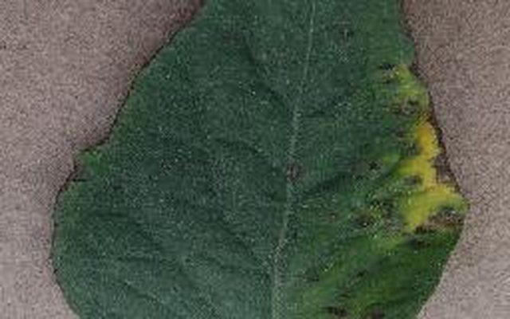
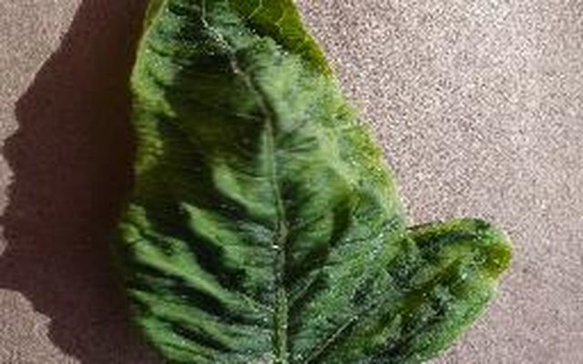
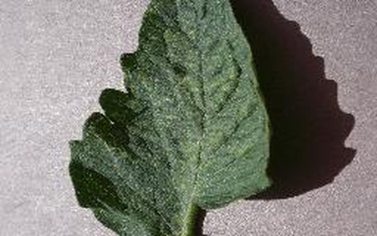
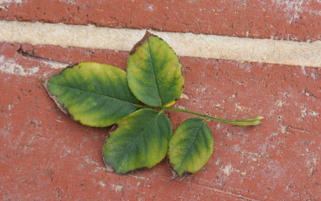
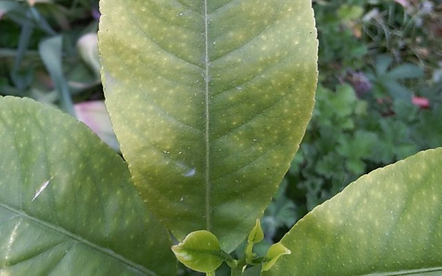
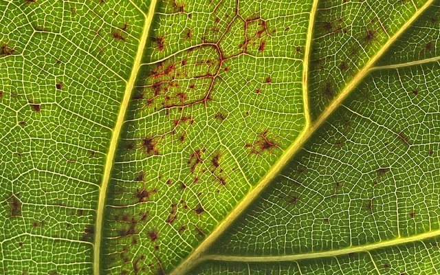
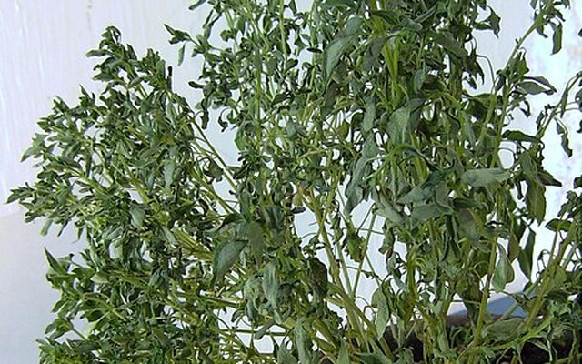
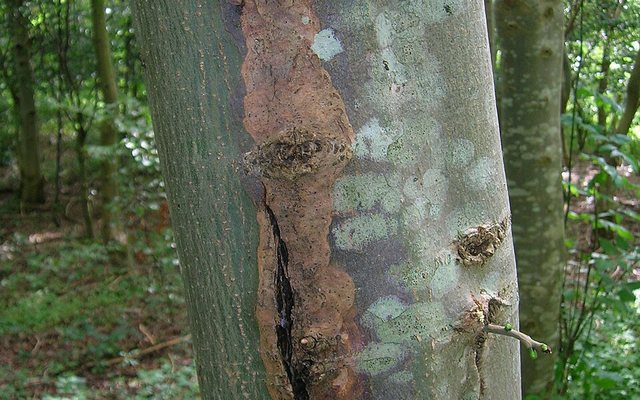
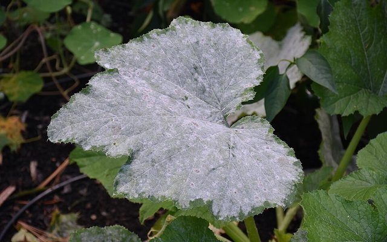

Why Plants Get Sick
Diseases and disorders start for many different reasons — from pathogens to growing conditions. These are the most common causes.
Fungal Diseases
Rusts, molds, leaf spots and blights that thrive in warm, humid conditions and spread by airborne spores.

Bacterial Diseases
Spread through water splash, contaminated tools and wounds, causing spots, rots and wilts.

Viral Diseases
Carried by insects like whiteflies and aphids, viruses cause curling, mottling and stunted growth.

Pests & Insects
Mites, caterpillars and sap-sucking insects damage leaves directly and spread disease as they feed.

Nutrient Excess
Over-fertilizing burns roots and leaf edges and can lock out other nutrients the plant needs.

Nutrient Deficiency
Missing nitrogen, iron or magnesium shows up as pale, yellowing leaves and weak growth.

Overwatering
Soggy soil suffocates roots and invites root rot — one of the most common ways plants die.

Water Deficiency
Drought stress causes drooping, crispy leaf edges and premature leaf drop.

Light & Heat Damage
Too much direct sun or heat scorches leaves, bleaching or browning the exposed surfaces.

Air-Related Issues
Low humidity, cold drafts and poor airflow stress plants and encourage mold and mildew.
How LeafMedic Works
Three steps from a worrying leaf to a treatment plan — all in your browser, with nothing uploaded anywhere.
Photograph a leaf
Take a close-up of a single leaf filling most of the frame, upload an existing photo, or try one of the built-in samples.
AI analyzes on your device
A neural network trained on thousands of leaf images runs right in your browser. It also checks photo quality — and says Uncertain rather than guessing.
Get treatment & prevention
Every diagnosis comes with symptoms to confirm, treatment options, and prevention tips — plus a heatmap of what the AI looked at.
No leaf handy? Try one of these real test photos:
Camera is off
Pick an image to begin
Choose a sample, upload a photo, or use your camera. The diagnosis runs entirely on your device — your photos never leave your browser.
Confidence
Highlights the leaf regions the model relied on.
Opens your browser's print dialog — choose "Save as PDF" to keep or share this diagnosis.
⚠️ Educational demo only — not a substitute for professional agronomic advice.
Recent analyses
diseases matches “All”
About LeafMedic
LeafMedic identifies plant diseases from a photo of a leaf using a MobileNetV2 neural network trained on the PlantVillage dataset. It recognizes 16 conditions across 4 crops: tomato, corn (maize), soybean, and cabbage.
Runs entirely in your browser
The quantized model (11 MB) is downloaded once and executed on your device with ONNX Runtime Web — using WebGPU where your browser supports it, and WebAssembly everywhere else. No photo you analyze is ever uploaded anywhere — there is no server.
It tells you when it isn't sure
A classifier with a fixed list of diseases will always name one, even for a photo of the sky. LeafMedic checks whether the image actually looks like a leaf, how spread out the prediction is, and whether the photo is sharp and well exposed — and reports Uncertain rather than guessing. The Why this diagnosis? button shows which parts of the leaf the model relied on.
It started on a Raspberry Pi
LeafMedic began as a Raspberry Pi 4 project with a 5 MP camera module and a PyQt5 interface. That desktop app still lives in the repository and now works with any webcam — this page is the no-hardware-required version.
Tips for good results
- Photograph a single leaf, filling most of the frame
- Use even, natural light; avoid harsh shadows and glare
- Hold the camera steady so the leaf is in focus
- Only tomato, corn, soybean, and cabbage leaves are supported
Links
Photo credits & licenses — leaf photographs come from the PlantVillage dataset (CC0) and Wikimedia Commons contributors.
⚠️ Educational project. For professional diagnosis, consult your local agricultural extension service.